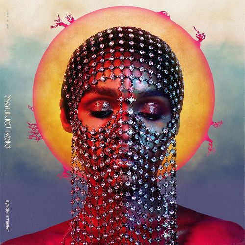

Album Review and Analysis

Janelle Monáe |DIRTY COMPUTER
Since her 2013 release of the album, Electric Lady, where femdroid protagonist Cindy Mayweather vowed to free the androids, Janelle Monáe has vowed to free her mind and herself. She has been very busy with acting, activism, and building her Wondaland empire. As of late, in her April 2018 interview with Rolling Stone magazine came the revelation that she in fact loves both men and women. Her latest project Dirty Computer let’s us in on that fact, among many other personal declarations. As a long time fan of Janelle Monáe’s work and admirer of her aesthetic, I was quite excited for this record and after listening to it many times, I’m even more excited about reviewing and analyzing its meaning. Let’s get into it…
As with most of Janelle Monáe’s music projects, there’s always a dichotomy. She wears black and white. She melds old styles of music with the new. Her ArchAndroid project revolved around an android falling in love with a human being. As an nod to Afrofuturism, the juxtaposition between humans and machines as a parallel to the oppressive nature of our racially segregated society is a recurrent theme in Monáe’s work. The album opens with Janelle’s ode to the “Dirty Computer” and with the exception of “Take A Byte,” the computer references end here. Most of the topics Monáe covers are quite human, raw, and emotional. Sexuality is a huge theme throughout the album, notably present in the sexual decadence of songs like “Take A Byte,” “Crazy, Classic, Life,” “Screwed,” “Pynk,” and “Make Me Feel.” Especially in the song “Screwed” it reminds me of Prince’s song 1999, an ode to partying while the world ends, experiencing all the instinctual pleasures a human can engage in before impending extinction. In fact, this song touches on another important point, as many terms we use for sex are also used to describe destruction. In light of recent political events, there’s a lot of screwing/fucking up going on, so as a response, Monáe decides now more than ever is a time to live her one life truthfully, as the world as we know it symbolically ends.
Monáe usually touches on political or social justice issues indirectly in some form of allegory or metaphor, but here, she speaks directly. In “Django Jane,” Janelle assertively raps about her upbringing, the so-called American dream of working from the ground up, and parallels that with her current status as a successful artist that is currently paving the way for other black artists, with her Wondaland artist collective. In “Americans,” Monáe condenses all the hypocrisies, bigotries, and injustices of American culture into a pop synth-filled, heavy drum beat and bass backed groove, reminiscent of Prince’s “Let’s Go Crazy” from Purple Rain and of course the song’s content is inspired by “America” from Around the World In A Day. Themes of female/self empowerment and sex positivity are found in “I Got The Juice,” “Make Me Feel,” “I Like That,” “Don’t Judge Me," and “Pynk,” as Janelle freely expresses her love and attraction for humans of any gender, as well as asserting her autonomy.
What I liked.There are obvious links to Prince throughout this album, most notably in the songs “Make Me Feel,” which has a guitar riff that is reminiscent of the beginning of “Kiss.” In fact, it’s been confirmed that the Purple One was working on this album with Janelle Monáe before he unfortunately passed on. Another music legend and influence of Monáe's, Stevie Wonder, contributes to the album as well with an interlude about love, in “Stevie’s Dream.” Respect for those who came before you and paved the way is imperative to adequate development as an artist. Janelle’s whole career is an ode to every person and every beat that shaped her as a person and musician (My theory is that many artists who disrespect their predecessors continue to make consistently bad music, i.e. Nicki Minaj). Many songs are my favorite here besides “Make Me Feel,” but “Don’t Judge Me” really stood out the most to me. On her website “I Am A Dirty Computer,” it states that the song was inspired by:
those vulnerable moments of in between. In between the moment you text something naughty and forbidden to them and the three replying dots appear to linger forever while you wait for the answer and your stomach curls into a ball... In between what you say publicly and what you do privately... in between the face in the red carpet photo and the face in the mirror... in between what America says about freedom but then actively does to me and my brothers and sisters...in between my mama and my loved ones and the way I live and love in my new life. [sic]
On this album, Janelle Monáe works well with her Wondaland family. Deep Cotton and Roman GianArthur really manage to include a variety of genres and sounds in production of the songs, while maintaining a similar flavor and flair that is authentic to Janelle Monáe's musical style and persona.
What I didn't like. I don’t particularly like the song “Screwed," but the song is tolerable. It sounds like a little Kidz Bop, pop rock song, but in retrospect, it’s fun and frivolous sound goes hand in hand with the frivolous nature of the song. The “sex equals power line,” seemed kind of out of place at first, but I get what she is trying to say in relation to the world being “fucked” or “screwed” as people assert their power over others, and as people use sex as a power play and form of manipulation.
Highly Recommended. The apocalyptic themes are ever present in Janelle Monáe’s work, demonstrating this idea that with the advancement in technology comes a devolution of human thought, morals, and emotion, and an eventual demise of the world. Human beings have become more prejudiced despite the advancements in technology and progressive thought, as they’ve decided there’s still an unacceptable way to be. Oftentimes, topics about a dystopian, yet technologically innovative society sprout up at a time when worries about people’s morals and ideologies being manipulated and molded to fit into a collective of way of thinking are prevalent. In her work, she reimagines a world in the future where these problems are resolved with some kind of savior figure. Here's she acts as a savior of herself, which could lead to other's liberation.
Essentially, Janelle Monáe likens her life and experiences as information on a computer hard drive that no one has access to unless the administrator’s username and password is entered. This album is our password. Some might react strongly to the slightly more explicit topics addressed as Janelle has previously had a more clean cut image, but it works here. I think it’s arguably her best work to date.
« Previous Next »